Here are descriptions of some of the more interesting or significant changes made to the Java development tools (JDT) for the 4.17 release of Eclipse. They are grouped into:
See also the Eclipse Platform What's New document for changes in the Platform.
We also recommend to read the Tips and Tricks.
JUnit |
|
| Collapse all nodes in JUnit view |
JUnit view now provides a context-menu option to collapse all nodes:
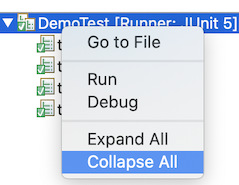 |
| Sort test results by execution time |
JUnit view now provides the ability to sort results by execution time.
By default, results will be sorted by execution order. Choosing Sort By > Execution Time
from the JUnit View menu will reorder the results once all tests are complete. While tests are still running, they will be shown in
execution order.
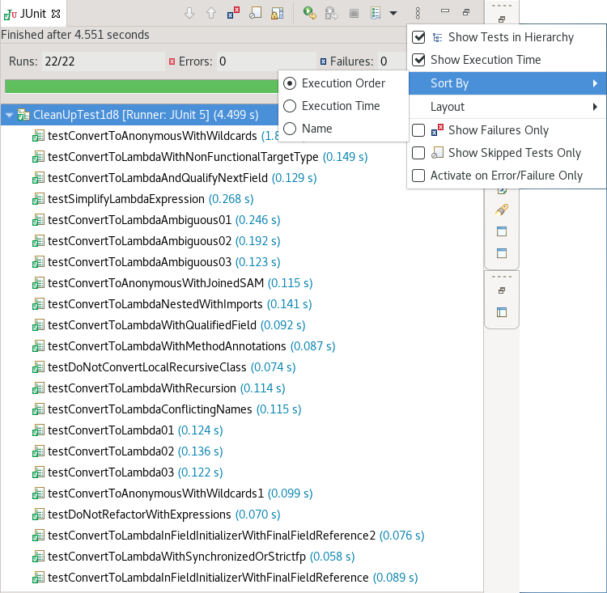 Sorting by execution order results in: 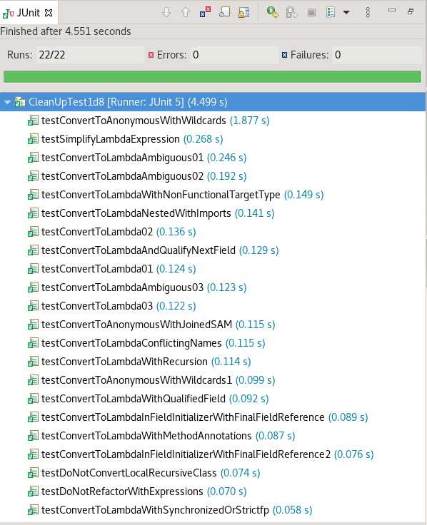 |
Java Editor |
|
| Substring/Subword matches for types |
Content Assist now fully supports both substring and subword matches for types:
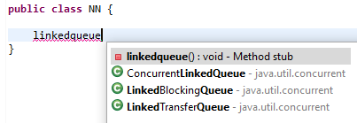 Substring matches are always shown and subword matches can be enabled/disabled with the existing Show subword matches option on the Java > Editor > Content Assist preference page. |
| Optimization tab |
A new tab has been added that gathers cleanups that improve the time performance: the existing lazy operator cleanup and the regex precompiler cleanup.
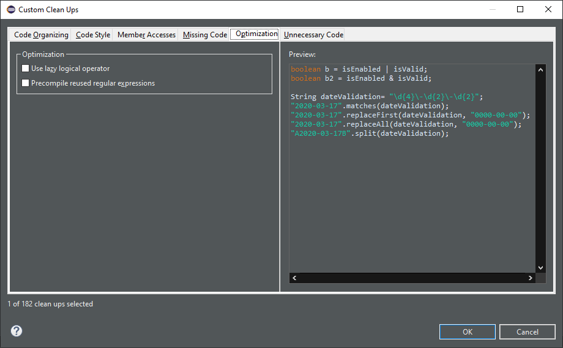 |
| Objects.equals() |
A new clean up has been added that makes use of Objects.equals() to implement the equals(Object) method.
It reduces the code and improves the reading.
The cleanup is only available for Java 7 or higher.
Although this kind of comparison is almost exclusively seen in the To select the clean up, invoke Source > Clean Up..., use a custom profile, and on the Configure... dialog select Use Objects.equals() in the equals method implementation on the Unnecessary Code tab. 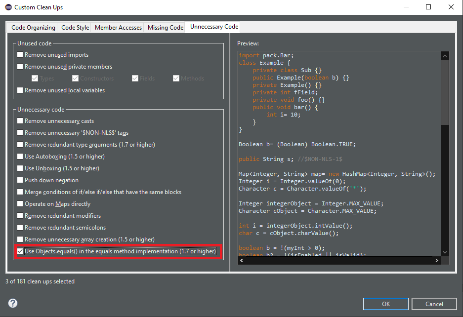 For the given code: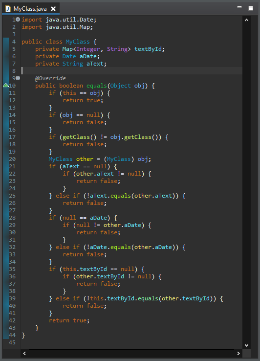 You get this after the clean up: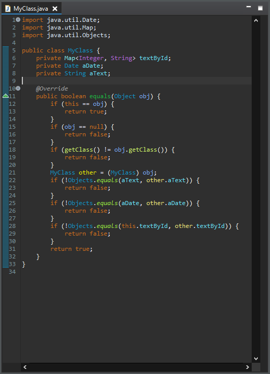 |
| Precompiles the regular expressions |
A new clean up has been added that optimizes the regular expression execution by precompiling it.
It replaces some usages of To select the clean up, invoke Source > Clean Up..., use a custom profile, and on the Configure... dialog select Precompiles reused regular expressions on the Optimization tab. For the given code: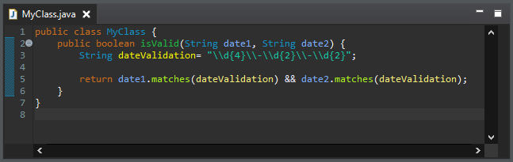 You get this after the clean up: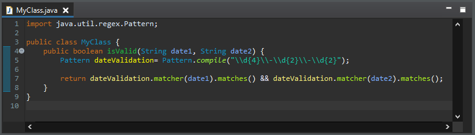 |
| String.format quickfix |
A new quickfix has been added to replace string concatenation with String.format, similar to the existing ones for StringBuilder and MessageFormat.
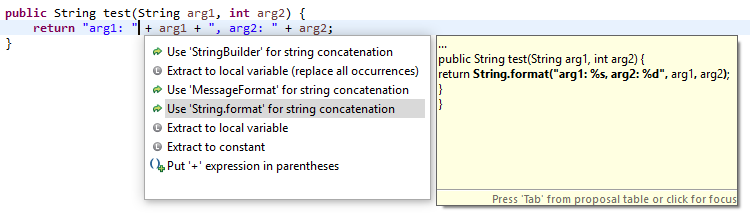 |
| Method reference quickfix |
A new quickfix has been added to create missing methods for method references.
NOTE! Current restriction is that this quickfix is only available on current class. NOTE! Expect current implementation to work on simple cases only.
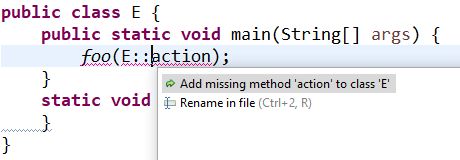 |
Java Views and Dialogs |
|
| Toggle Code Minings From Find Actions Menu |
The code minings within an editor can be enabled/disabled through the Find Actions menu (Ctrl+3).
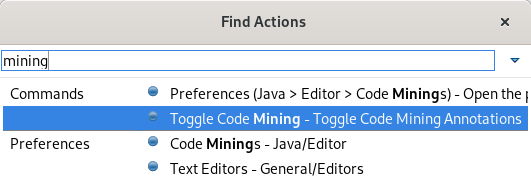 |
Java Formatter |
|
| Assert statement wrapping |
A new setting in the Formatter profile controls line wrapping of assert statements.
A line wrap can be added between the assert condition and its error message.
The setting can be found in the Profile Editor (Preferences > Java > Code Style > Formatter > Edit...) in the Line Wrapping > Wrapping Settings > Statemtens > 'assert' messages node.
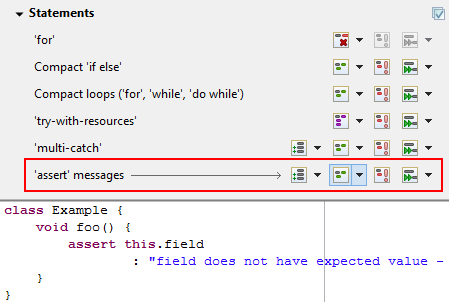 |
Debug |
|
| Anonymous class instance in evaluation |
The JDT debugger is now capable of inspecting/evaluating expressions with anonymous class instances.
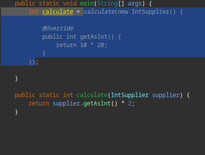 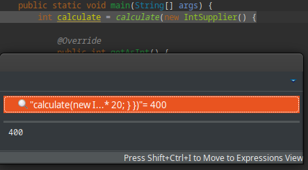 |
| JEP 358: Helpful NullPointerExceptions |
The JDT debugger has now a checkbox option to activate the command line support for JEP 358.
This is disabled below Java 14 and enabled by default for Java programs launched with Java 14 and above.
-XX:+ShowCodeDetailsInExceptionMessages 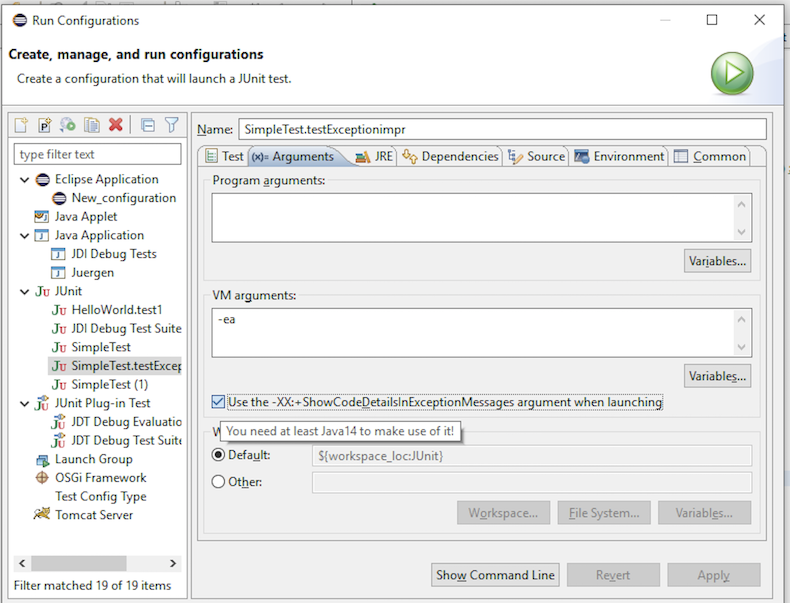 JVM is now capable of analyzing which variable was null at the point of NullPointerException and describe the variable with a null-detail message in the NPE. |
| Actual type in Variables view |
The option Show Type Names in the Variables and Expressions views now displays the value's actual type instead of its declared type.
This simplifies debugging especially when variable details (toString()) is shown As the label for all variables.
To enable Show Type Names in the Variables view, column mode must be disabled (View Menu > Layout > Show Columns). Example: Object s = "some string"; Collection<?> c = Arrays.asList(s, 1); // breakpoint 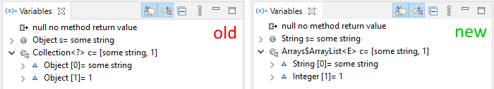 |